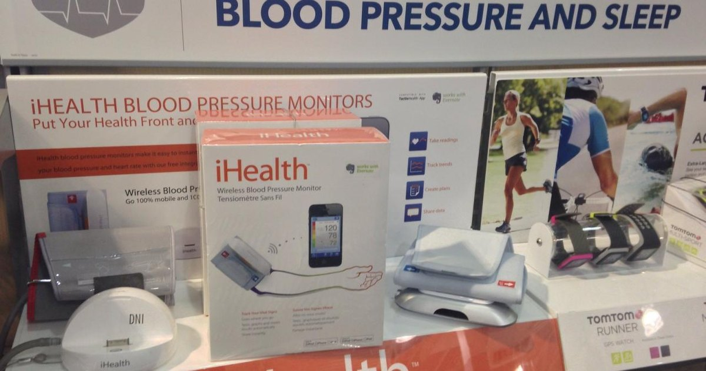

這篇屬於早期睡眠科技專題，保留作為延伸閱讀。若你想處理春夏夜間熱感、熟齡睡眠與日常恢復，建議優先閱讀 春夏熟齡睡眠與夜間降溫。
在矽谷與華爾街，頂尖菁英見面時問的不再是「你睡得好嗎？」，而是「你昨晚的睡眠分數 (Sleep Score) 是多少？」。睡眠不再是一種休息，而是一種需要被優化的「生物資產」。
道理很簡單。如果你每天負責決策數百萬美金的流向，你的大腦前額葉皮質 (Prefrontal Cortex) 必須處於巔峰狀態。研究顯示，深層睡眠 (Deep Sleep) 減少 10%，隔天的決策錯誤率可能上升 20%。這對創業者來說，是不可接受的風險。
過去 90 天，我同時使用了 Oura Ring (監測) 與 Eight Sleep (干預)，以下是我的實測報告。
| 維度 | Oura Ring (Gen 4) | Eight Sleep (Pod 4) | Apollo Neuro (輔助) |
|---|---|---|---|
| 核心機制 | 高精度光學傳感器 (監測) | 液態冷卻/加熱循環 (干預) | 聲波震動調節神經 (放鬆) |
| 數據洞察 | ★★★ 提供極其準確的 Readiness Score | ★★ 睡眠階段分析 (稍遜於 Oura) | N/A (這是干預工具) |
| 睡眠改善效果 | 被動 (你知道你睡不好，但無能為力) | 主動 (即時降溫，Deep Sleep 提升 30%) | 輔助 (將 HRV 提升約 10%) |
| 價格 | $349 USD + 訂閱 | $2,295 USD | $349 USD |
我的實驗數據顯示，當我設定 Eight Sleep 在入睡階段保持 20°C，並在清晨 5 點緩慢回升至 35°C 時，我的深層睡眠時間平均增加了 45 分鐘。這 45 分鐘的差異，體現在第二天的專注力上是巨大的。
Oura Ring 告訴我「發生了什麼」，而 Eight Sleep 則「改變了什麼」。兩者缺一不可。
查看 Eight Sleep 獨家優惠在高壓會議後，我的交感神經往往難以平復（Fight or Flight 模式）。這時候，我會戴上 Apollo Neuro。它不追蹤睡眠，而是透過不察覺的震動波頻，騙過迷走神經，讓身體以為「你很安全」。這是我提升 HRV (心率變異度) 的秘密武器。
探索 Apollo Neuro 科學原理如果你願意為公司的服務器花大錢維護，為什麼不願意為你的大腦——這台最重要的生物電腦——進行升級？
「高績效不是一種天賦，而是一套可以被逆向工程的協議。」
我的建議是：先買 Oura Ring 建立基準線 (Baseline)，確認問題所在。如果預算允許，Eight Sleep 是我做過最高回報的健康投資。